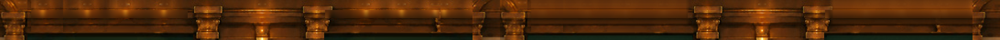
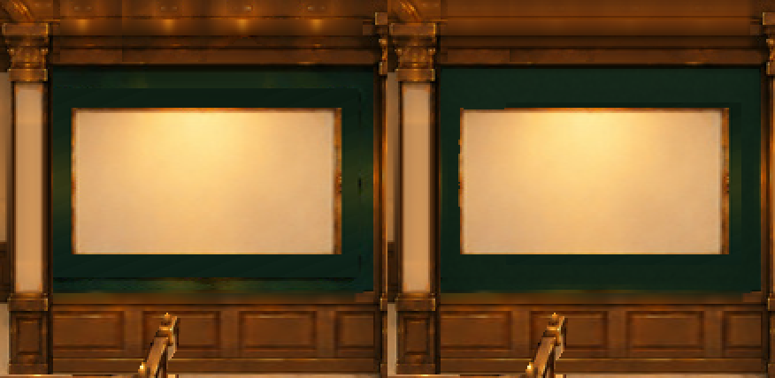
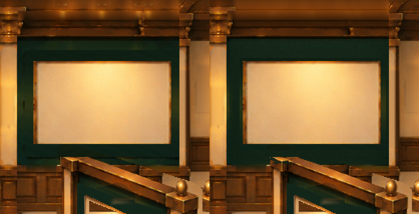

エントランス背景の再構築 v06
旧v05の拡幅構図をもとに、天井材と左右の緑壁面を再構築した試作です。木製額縁・植物・壁灯・カーペットは追加しません。美術承認前です。


天井・背面左右を拡大して確認



画像読込中
天井の中央装飾、既存木製腰壁・扉・前景は維持。壁と天井の見えない裏側は既存PNGから推定再構築しています。完成品質の採否は未決定。旧v05の拡幅構図をもとに、天井材と左右の緑壁面を再構築した試作です。木製額縁・植物・壁灯・カーペットは追加しません。美術承認前です。



画像読込中
天井の中央装飾、既存木製腰壁・扉・前景は維持。壁と天井の見えない裏側は既存PNGから推定再構築しています。完成品質の採否は未決定。